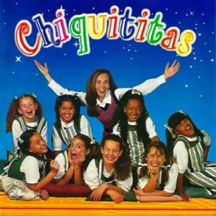

Detalhes técnicos
A primeira temporada de Chiquititas foi exibida de 28 de julho até 29 de novembro de 1997, em 108 capítulos. Adaptada por Ecila Pedroso e dirigida por Hernan Abrahamsohn, em coprodução entre SBT e Telefe. Teve como tema de abertura a música Remexe, presente no primeiro CD da trama.
Sinopse

Quando Gabriela Almeida Campos (Cláudia Santos) teve sua filha, a doce Milena Pereira (Fernanda Souza), o poderoso empresário Dr. José Ricardo Almeida Campos (Rogério Márcico), pai de Gabriela, sumiu com a criança e inventou que ela tinha morrido. Para acompanhar o crescimento da garota, ele criou o orfanato Raio de Luz.
Carolina Correia (Flávia Monteiro) é uma jovem operária que trabalha na fábrica Pureza, da família Almeida Campos. Ela se torna líder sindical e começa a lutar pelos direitos dos trabalhadores. Ela é amiga de Letícia (Cecília Arellano), que tem uma filha, a Daniela (Giselle Medeiros). Letícia acaba sendo vítima de um aneurisma e Carolina começa a lutar pela guarda da menina.
Na fábrica, Carolina conhece o empresário José Ricardo Júnior (Alex Benn) e se apaixona por ele. Porém, o Dr. José Ricardo passa a conspirar ativamente contra o romance dos dois, pondo em risco a guarda da Daniela. Diante do risco de Carolina não conseguir a guarda, ela coloca Daniela no Raio de Luz, para continuar perto da garota.